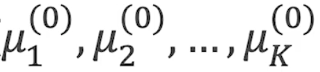
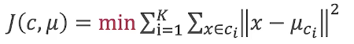
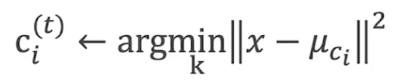
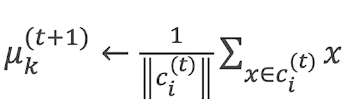
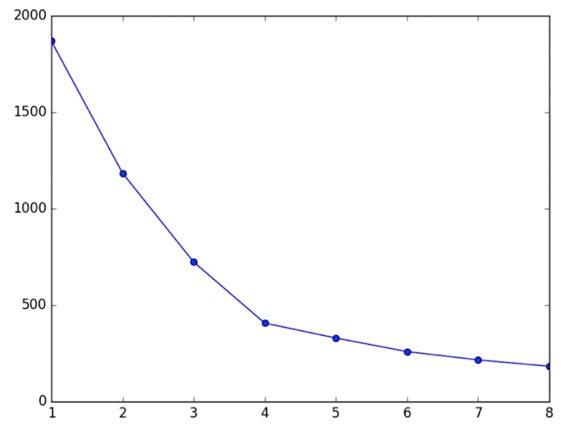
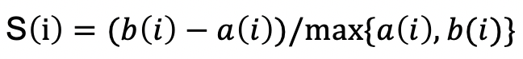
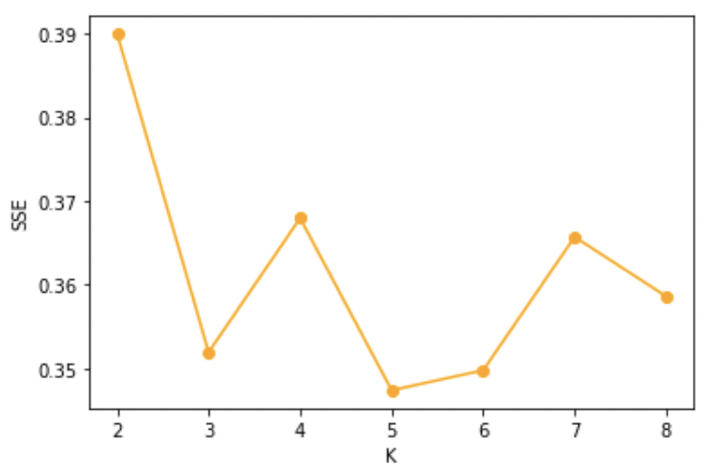
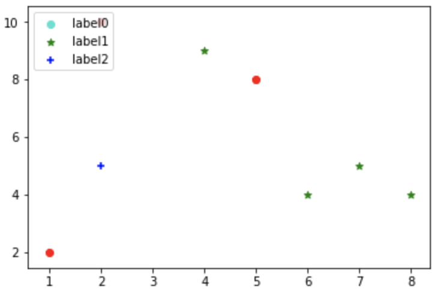
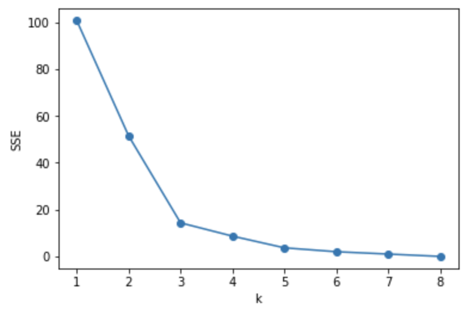

算法简介
K-means 是一种无监督的聚类算法，对于给定的数据划分为K个簇，并且给出每个簇的中心。
K-means算法
数据预处理
数据预处理包括：
a.剔除离群点
b.数据归一化：0-1区间（由于k-means算法依赖于距离，因此必须保证每个维度的距离单位一致）
c.数据标准化：转化为正态分布
初始化：随机选择K个中心点

其中，(0)代表迭代次数
定义损失函数：

因为机器学习算法是通过学习完成一定的功能，迭代的方向谁来指定呢？—— 损失函数
t为迭代步数，重复下面a、b过程至算法收敛
a.对于每个样本点，将其分配到最近的簇

b.对于每个簇，重新计算聚类质心

K-means算法缺点
1.需要人工选择K值，不一定符合真实数据分布
2.受初始值和离群点的影响较大，稳定性较差。不同的初始值对应不同的迭代次数，离群点对于簇的中心点有影响，需要更多的轮数达到收敛
3.只能用于连续性变量
4.通常结果并非全部最优，而是局部最优（与初始值选取有关）
K-means算法优点
1.对于大数据集，算法时间复杂度为线性O(NKT)
N:样本点个数 K:聚类中心个数 T:迭代轮数
2.局部最优解通常已经满足问题的需要
K-means算法调优过程
K值选择
手肘法
原理是尝试不同的K值，横坐标：聚类个数K，纵坐标：误差平方和(损失函数) J，即各聚类的类内间距离和：

为什么曲线是递降的？考虑若只有10个样本，那么当聚类数K=10时，损失函数 J=0 （每个簇只有一个点，那么质心也为该点，即类间距离均为0）；当K=1时，即所有样本归属于一类，所有样本距离质心的距离最大（由于没有寻找距离样本最优的质心，因此距离最大）
在上图中，我们认为4是比较合理的，即拐点位置。
轮廓系数
评判标准：轮廓系数（silhouette coefficient）

a(i)：样本点与被划分到相同类别的其他样本点的距离，距离越小反映该样本点越应该与其他点划分为一类，也称为“内置度”，值越小越好
b(i)：样本点与其他类样本点距离，也称为“分离度”
S(i)会被限制在-1~1之间，当S(i)越接近-1则表示划分结果越差，越接近1则表示划分结果越好
轮廓系数等于所有点轮廓系数的平均值

最终需要结合手肘法和轮廓系数两个值来进行判断，在手肘法中寻找相对稳定的区域，轮廓系数越高越好。
K-means算法改进
由于受初始值的影响较大，影响算法稳定性（迭代次数），因此我们可以对初识值的选择进行优化 —— K-means++算法。
改进思想：选取第n+1个聚类中心时，距离其他聚类中心越远，被选中的概率越大
K-means算法代码
1 | from numpy import * |

算法调优代码
针对K值进行调优
1 | from sklearn.cluster import KMeans |
